5. 3D Scanning and Printing¶

About this week¶
Briefly describe the goal of the assignment. What are you characterizing, testing, or exploring
Ger:
- Testing print-in-place parts, with various tests for axial strength tests etc., on the UltiMaker S5.
- Testing properties of large-format 3d-printing.
1.: Printed-in-Place part was Acrylic insterted during a printer pause. Tested “Squiggle” bending, stretching and torsion; Print in place handles, and, for comparison, all-PLA part.
2.: Using the Ginger G1 pellet printer, with a nozzle size of 3.0mm. Did the Overhang Angle Test and the Bridging Test.
Shaaz:
- Testing design rules STLs on the Bambu P2S with Generic PLA.
- Printed all test models with and without supports to compare overhang, clearance, and anisotropy behaviour.
Tools and materials used¶
List all the machines, software and materials used in this assigment.
Ger: Tools and Materials¶
- Laptop,
- Rhino, Grasshopper, Ginger Slicer
- USB, to transfer
- UltiMaker S5
- FormFutura PLA, White (2.85mm)
- Ginger G1 system
- rPLA Pellets
- Measuring devices
Shaaz: Tools and Materials¶
- Laptop
- Bambu Studio slicer
- Bambu P2S printer
- Generic PLA filament
- USB drive (to transfer .3mf file to printer)
- Design rules STL test files (from Fab Academy)
Process and methodology¶
Describe step-by-step what the group did. Include sketches, screenshots, or videos if possible.
Ger:¶
- Drew model in Rhino3D, and went from Rhino to DXF for laser cutter part.
- Tolerance (height) was too low. Measured acrylic thickness was 3.1mm, and layer-height of 0.15mm. Increased by one layer. Caused “Filament-Stuck” error when too low.
- Rewrote to Grasshopper to test series of dimensions. And re-wrote for all PLA part.
- Printed the 3DHubs on the G1. Scaled x2.4.
- Observed top surface issues on other models. Due to the size, top surfaces drag between infill gaps.
- Wrote a grasshopper script to test bridges. Instead of volumetric towers, test was of a series of wall contours.
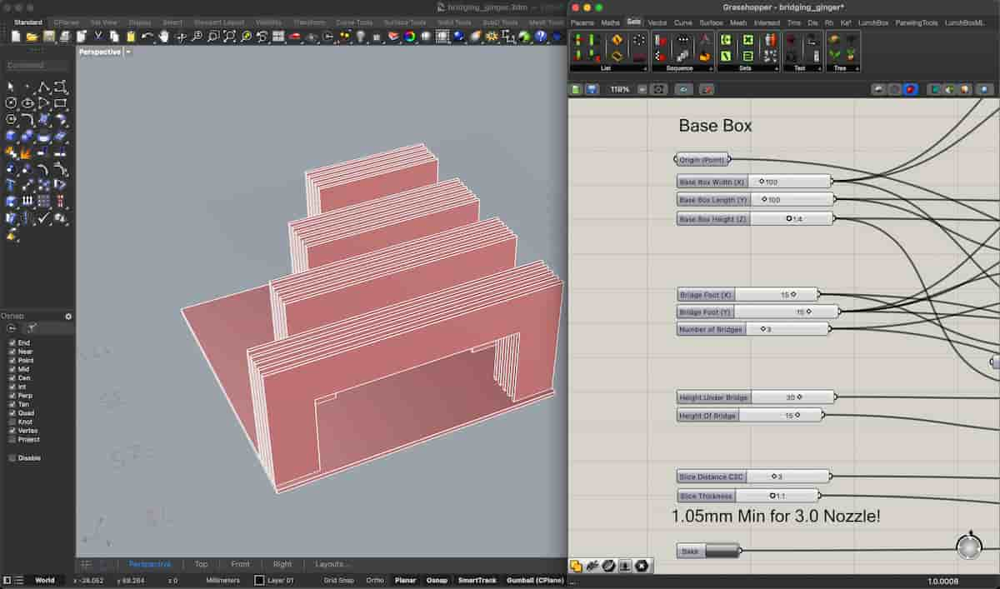
Shaaz: Bambu P2S Design Rules¶
Slicer setup: Imported all design rules STLs into Bambu Studio, selected the Bambu P2S printer and Generic PLA material. Laid out all test pieces on the build plate.
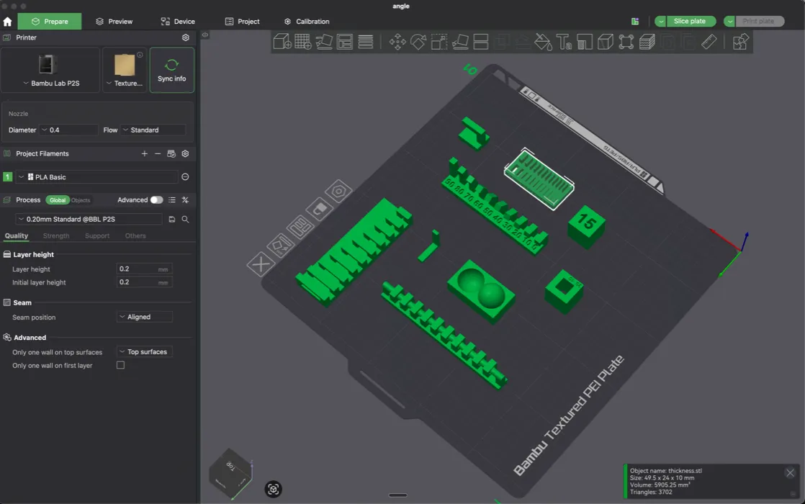
Supports configuration: Created duplicates of overhang and clearance models — one set with supports enabled, one without — to directly compare results.
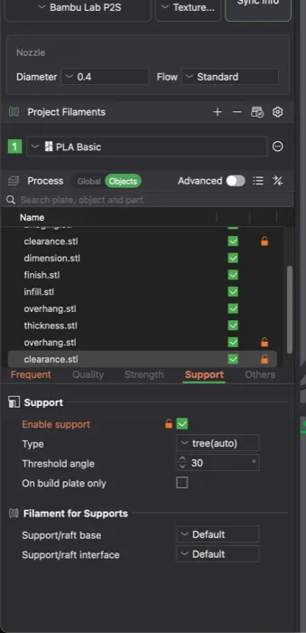
After slicing, Bambu Studio warned about unsupported overhangs. The layer-by-layer preview revealed a critical issue: the overhang L-shape has a tiny 2mm unsupported span.
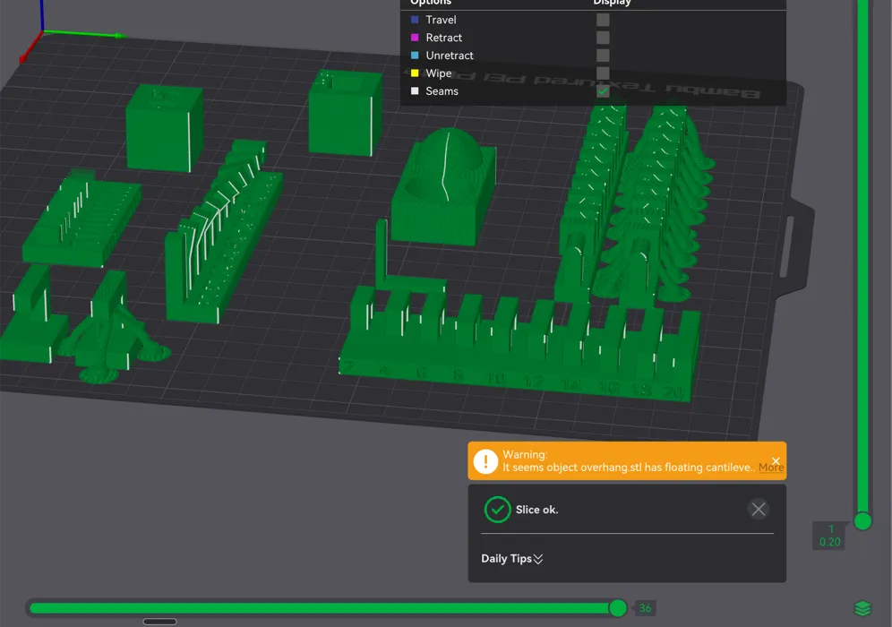
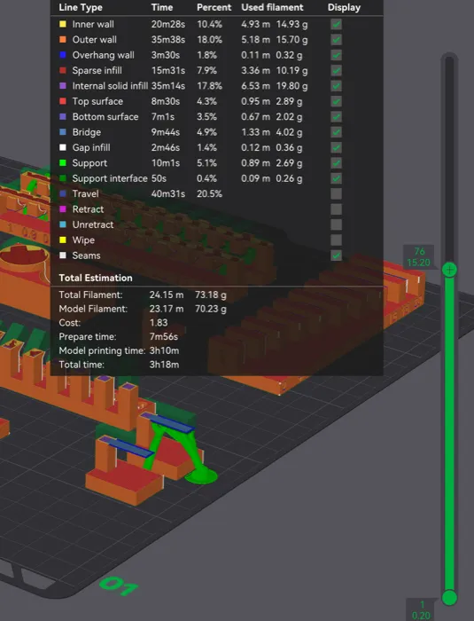
Printing: Exported the .3mf file to USB and loaded it on the Bambu P2S. Applied adhesive spray to the bed plate for easier removal.
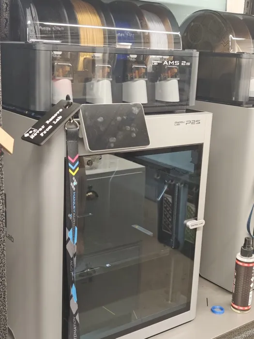
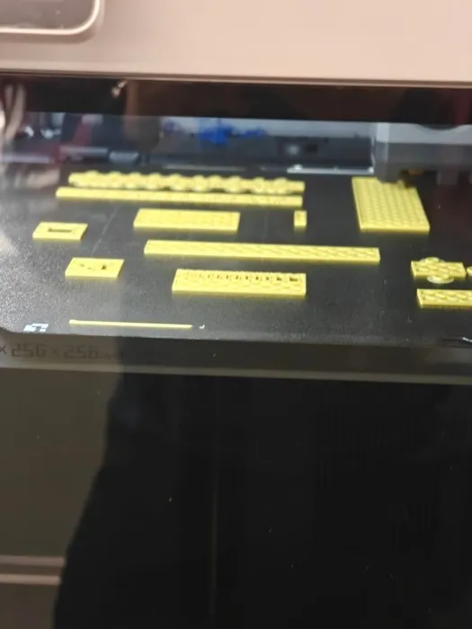
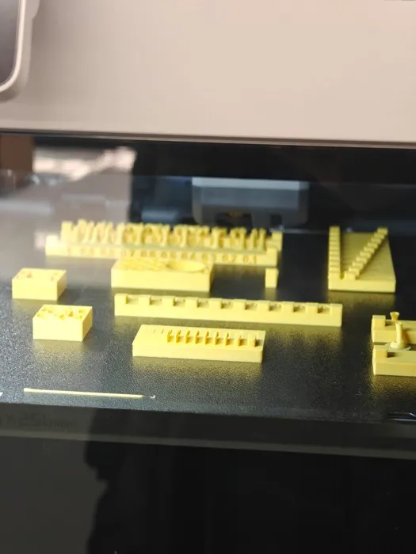
Results:
All design rules test pieces printed successfully:
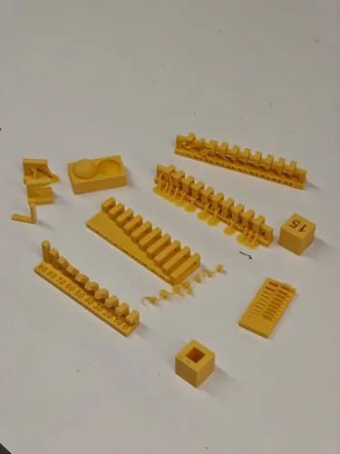
Clearance test: Without supports, the top of the clearance piece was a disaster — material sagged badly into the gap.
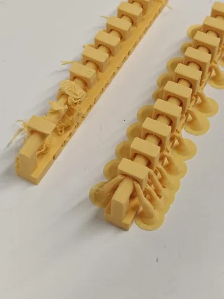
Overhang test: Without supports, the overhang drooped at the lowest layers, as expected. The angle test showed at which angles drooping begins.
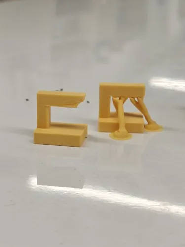
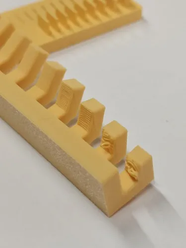
Anisotropy test: The lowest layers have long horizontal extrusions while upper layers have shorter ones. As expected, the part snaps easily at the transition point when force is applied.
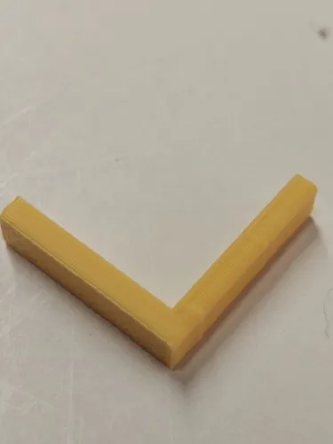
Group conclusions¶
Findings:
- Ger: Print-in-place parts with acrylic inserts require precise tolerance control — layer height matters. Large-format (Ginger G1, 3mm nozzle) prints show top-surface dragging between infill gaps at scale.
- Shaaz: Overhangs without supports droop predictably below ~45 degrees. Clearance tests fail badly without supports. Anisotropy causes easy snap at layer-direction transitions. Tolerance for fused filament on the Bambu P2S is approximately 0.5mm.
Challenges:
- Ger: Acrylic insert tolerance was too tight (3.1mm acrylic vs 0.15mm layer height). “Filament-Stuck” error when gap was insufficient. Top-surface quality issues on large-format prints.
- Shaaz: Support structures overlapped with adjacent unsupported test pieces when placed too close together. Overhang warnings from slicer needed to be intentionally ignored for comparison testing.
Solutions:
- Ger: Rewrote in Grasshopper to parametrically test a series of dimensions. Wrote a separate script for bridge testing with wall contours only (no volumes).
- Shaaz: Separated and re-spaced the supported and unsupported copies on the build plate. Used Generic PLA profile instead of PLA Basic on instructor’s advice for more representative results.
Files¶
Add all files created for this group assignment
See below link to to files created this week: